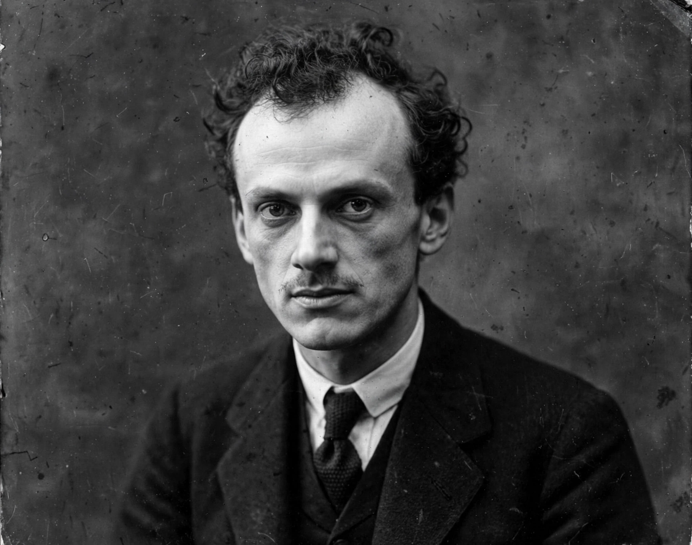

Paul Dirac
| Born | 8 August 1902, Bristol, England |
|---|---|
| Died | 20 October 1984 (aged 82), Tallahassee, Florida, US |
| Known for | Dirac equation, prediction of antimatter, Fermi–Dirac statistics |
| Awards | Nobel Prize in Physics (1933, shared with Erwin Schrödinger) |

[Image: Portrait photograph of Paul Dirac, a gaunt man with a thin moustache]Paul Adrien Maurice Dirac (8 August 1902 – 20 October 1984) was an English theoretical physicist who is considered to be among the founders of quantum mechanics and quantum electrodynamics. He was the Lucasian Professor of Mathematics at the University of Cambridge, a professor of physics at Florida State University, and a 1933 Nobel laureate.
Dirac's contributions include the Dirac equation, a relativistic equation for the electron (1928) that implied the existence of antimatter — the positron, discovered in 1932 — as well as the foundations of quantum field theory, Fermi–Dirac statistics, the Dirac delta function and the bra–ket notation used throughout quantum physics.
Early life and education
Dirac was born in Bristol to a Swiss father, who imposed French-only conversation at home, and an English mother. He studied electrical engineering at the University of Bristol, then mathematics at Cambridge, where he took his doctorate in 1926 with the first thesis on quantum mechanics submitted anywhere.
The Dirac equation
Seeking an equation for the electron compatible with both quantum mechanics and special relativity, Dirac in 1928 found a first-order wave equation whose solutions automatically incorporated electron spin and the correct magnetic moment. The equation also admitted negative-energy solutions, which Dirac interpreted first with his 'hole theory' and then, in 1931, as a new particle of electron mass and positive charge — the positron, observed by Carl Anderson in cosmic rays in 1932.
In 1930 Dirac published The Principles of Quantum Mechanics, a famously lucid textbook that shaped generations of physicists. With Erwin Schrödinger he shared the 1933 Nobel Prize 'for the discovery of new productive forms of atomic theory'.
Later work and character
Dirac also proposed the existence of magnetic monopoles (1931), showing that a single monopole would explain the quantisation of electric charge; developed the theory of constrained Hamiltonian systems; and spent his later years seeking a more aesthetically satisfying formulation of quantum electrodynamics, objecting to renormalisation as ugly mathematics. Personally taciturn to a legendary degree — colleagues joked that 'a dirac' was a unit of one word per hour — he died in Tallahassee in 1984 and is commemorated by a plaque in Westminster Abbey near Newton's.